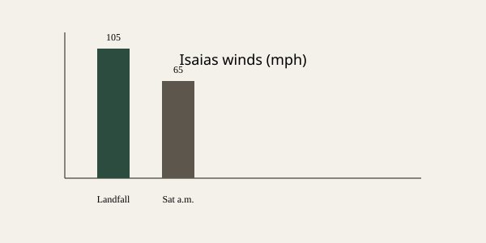

Florida Panhandle · Hurricane · 10 October 2026
Isaias made landfall near Destin as a Category 2 and weakened to a post-tropical cyclone

What is agreed across desks
The National Hurricane Center reported that Hurricane Isaias, the first hurricane of the 2026 Atlantic season, made landfall near Destin, Florida, on the evening of 9 October. Multiple wire and broadcast accounts place the time at approximately 8:30 p.m. Central Daylight Time and the intensity at landfall as Category 2 with maximum sustained winds of 105 mph. By early Saturday the system had weakened rapidly over land and was classified as a post-tropical cyclone with maximum sustained winds of 65 mph while moving across southern Alabama. Power outages reached hundreds of thousands of customers in Florida and Alabama according to tracking services cited by Reuters, CBS, and NBC. Storm-surge and flooding threats continued inland even after hurricane warnings were dropped.
What is only a quote or forecast
Earlier forecasts had discussed the possibility of major-hurricane intensity. Those discussions described possible peak winds and surge values before landfall; they are not measurements of the actual landfall winds. Statements by local officials about evacuation numbers or specific damage reports remain secondary to the NHC advisories. Exact customer outage counts change hourly as restoration begins and are not fixed official totals in the early Saturday reports.
Mechanism and history
Tropical cyclones are classified by the Saffir-Simpson scale based on one-minute maximum sustained winds. Category 2 corresponds to 96–110 mph. Once a system loses its tropical characteristics or its winds drop below tropical-storm force it is reclassified as post-tropical or extratropical. Rapid weakening after landfall is typical because the storm is cut off from the warm ocean heat source that sustains it. Isaias was the latest first Atlantic hurricane in more than a century according to prior NHC and historical comparisons. The Florida Panhandle and Alabama coast have experienced multiple landfalls in recent decades; infrastructure and evacuation planning for surge and wind are standard state and federal procedures under the National Hurricane Center’s warning system.
What the story is not
It is not a completed damage assessment. It is not evidence of a change in long-term climate trends from a single storm. It is not a report of fatalities or specific structural collapses beyond the power and flooding impacts described in the early advisories. The photograph used is a historical type image of the Destin shoreline, not imagery of the 2026 event.
